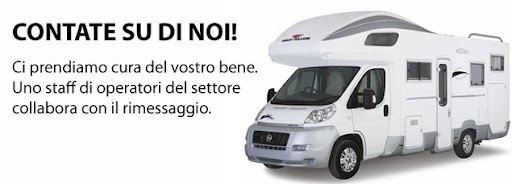

Il Centro Caravan Europark nasce nelle campagne di Borgo Hermada, una piccola frazione facente parte del comune di Terracina, in provincia di Latina, dall'ingegno e dal fiuto di Lombardi Cosimo e di suo figlio Lombardi Antonio. In pochi anni l'Europark è cresciuto quasi esponenzialmente, dai 2 capannoni del 1988 fino ai conclusivi 10 capannoni del 1995. Ad oggi è uno dei più grandi rimessaggi del Lazio, con circa all'attivo 523 mezzi fra roulottes, camper, barche, gommoni e carrelli tenda . Nel corso dei vari anni numerose sono state le marche passate per il rimessaggio, menzione d'onore per Roller, Adria, Caravelair, Laika e moltre altre...
Offriamo numerosi servizi, siamo specializzati su roulottes,camper,carelli tenda,barche,gommoni. Non solo Offriamo rimessaggio e manutenzione per il vostro mezzo, ma abbiamo anche un'officina operativa per lavori più importanti. Siamo anche un centro convenzionato Conver, ossia vendiamo verande e tende varie per tutte le esigenze di voi campeggiatori e non. Di seguito vengono mostrati alcuni dei nostri servizi ed il prezzario:
| Mezzo | Durata Contratto | Prezzo | Manutenzione |
|---|---|---|---|
| Roulotte | 1 anno | € 285,00 | Compresa |
| Camper | 1 anno | € 400,00 | Compresa |
| Carrello tenda | 1 anno | € 150,00 | Compresa |
| Barca | 1 anno | € 650,00 | Compresa |
| Gommone | 1 anno | € 600,00 | Compresa |
Il rimessaggio è aperto tutti i giorni tranne la domenica dalle ore 07:00 fino alle 12.30 e dalle 14:30 fino alle 19:00
Recapiti telefonici: 0773770132
3385351831
3393444567
e-mail: info@centrocaravaneuropark.it
antonio.lombardi@centrocaravaneuropark.it
sara.alonzi@centrocaravaneuropark.it
Il rimessaggio è situato in strada Macchiarella, 41 Borgo Hermada,Terracina(LT) 04019
Clicca sull'immagine di sotto per visualizzare la nostra posizione Google Maps